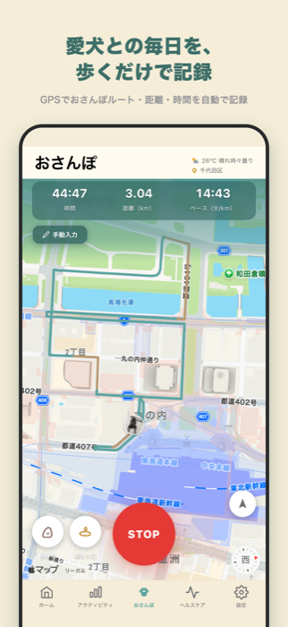
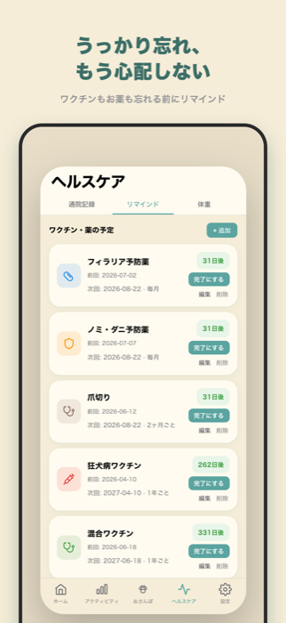
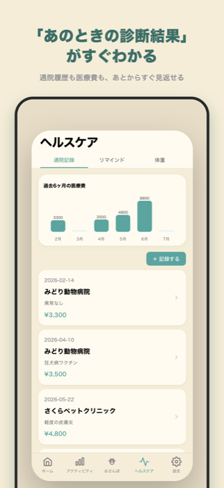
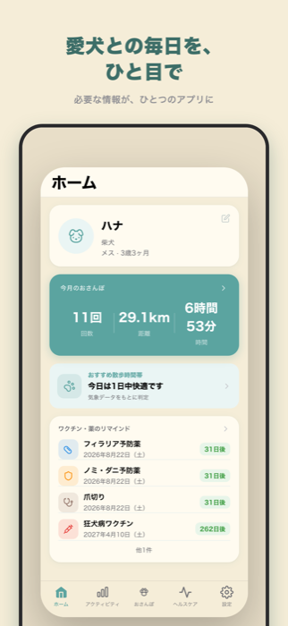
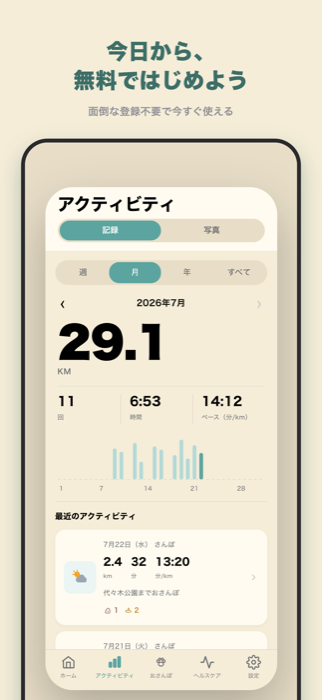

Morewagsを作った理由
Morewagsは、犬と暮らす中で「もっと記録を簡単に、もっと大切に残したい」という思いから生まれました。
散歩の距離も、ワクチンの予定も、通院の記録も——気づけば忘れてしまいがちな愛犬とのお世話を、迷わず続けられるように。
ひとつひとつの機能は、実際に犬と暮らす中で「こんな機能が欲しい」と感じたことから作っています。ご意見・ご要望をいただきながら、これからも少しずつ育てていきます。
毎日のお世話を、もっと簡単に。散歩も体重も通院記録も、大切な記録をいつでも見返せるように。
公開のお知らせを受け取る愛犬の記録を、無理なく毎日の習慣に。





お世話の記録を、まるごとひとつに。
スタートを押すだけで距離・時間・ルートを記録。うんち・おしっこもワンタップで残せます。
日々の体重を記録し、前回からの変化や推移をひと目で確認できます。
診断名や処方薬、費用を記録。月ごとの医療費もグラフで確認できます。
「次いつだっけ？」をなくす、周期リマインダー機能。
Morewagsは、犬と暮らす中で「もっと記録を簡単に、もっと大切に残したい」という思いから生まれました。
散歩の距離も、ワクチンの予定も、通院の記録も——気づけば忘れてしまいがちな愛犬とのお世話を、迷わず続けられるように。
ひとつひとつの機能は、実際に犬と暮らす中で「こんな機能が欲しい」と感じたことから作っています。ご意見・ご要望をいただきながら、これからも少しずつ育てていきます。